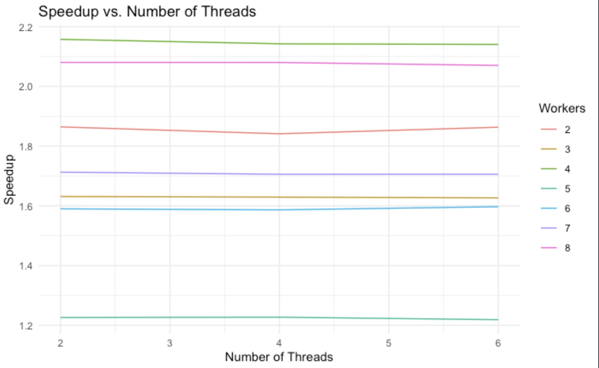
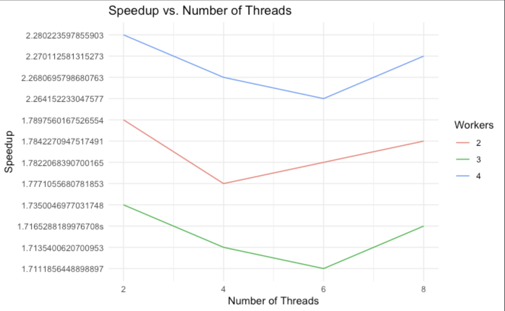
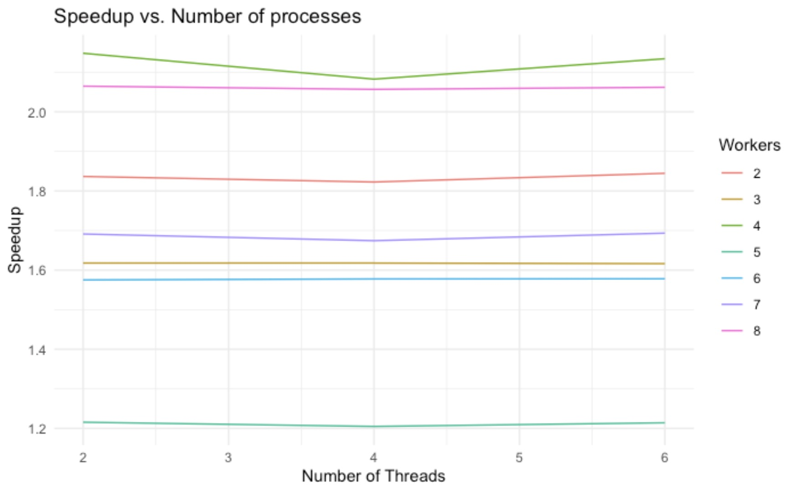
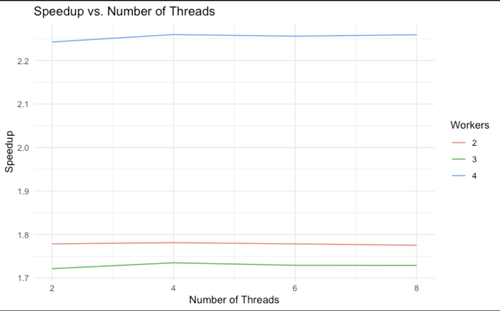

keoni Burns
CSCI 581
the problem I chose was to adapt a pitch shifting program that utilizes the cooley-tukey fast fourier transform. Pitch shifting can be broken down into a couple of portions: Analysis, processing, synthesis, and accumulation. each of the portions are essential to correctly producing either a higher or lower pitch sound while maintaining the original length of the audiofile. The high level overview of how this works is as follows:
by partitioning the entire wave file into overlapping windows (samples) each overlap should be uniform. After we have our windows we can then use the fourier transform to give us the range of signals or values that each window has. Once this is done we can spread the windows out and use interpolation to fill in our missing values from the given sound samples. after which we can perform the inverse fourier transform on each of our new partitions and add them to our sound sample.



